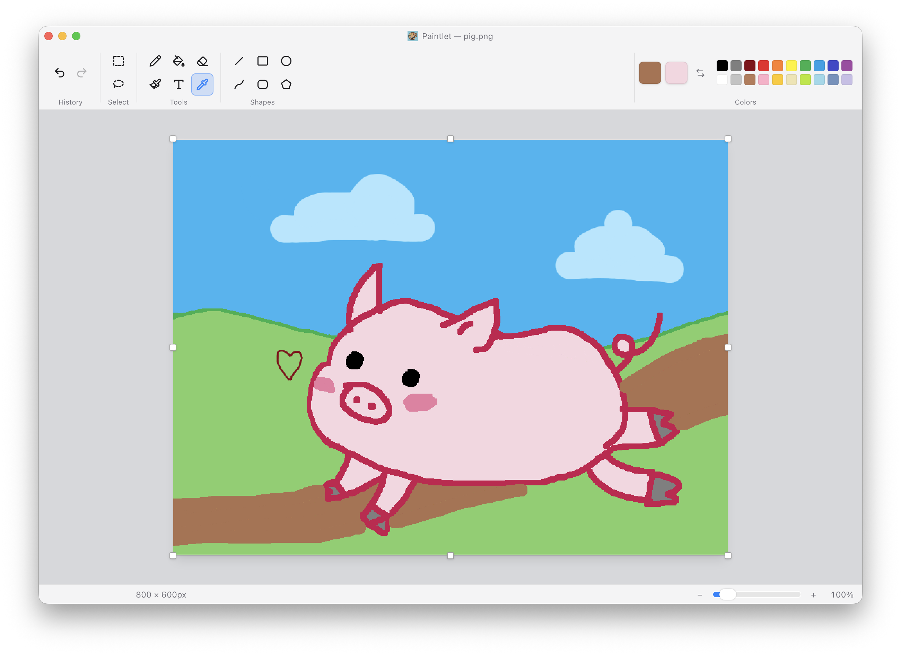
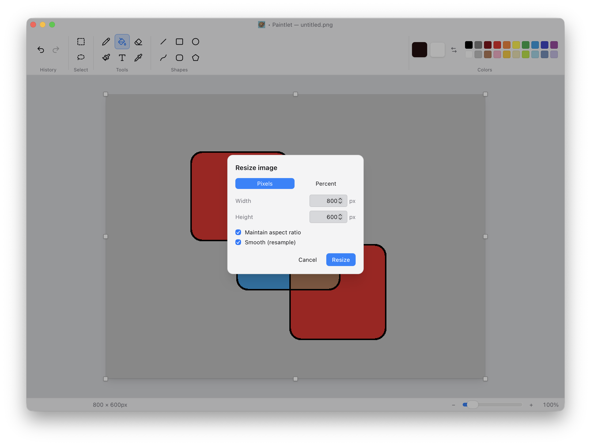
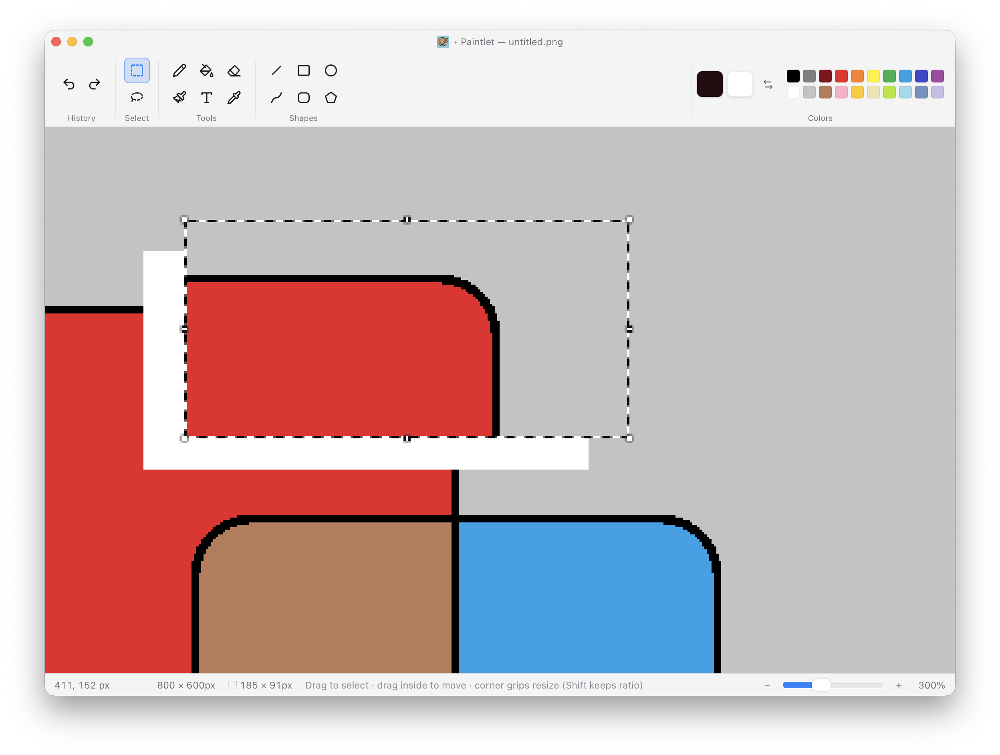
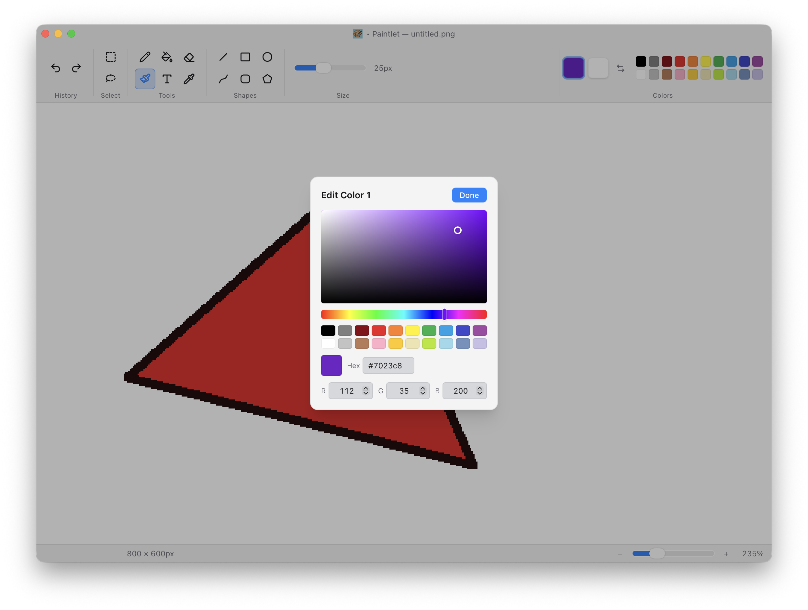

Freehand
Pencil, brush, and eraser with a width slider.
A small, light raster editor that brings Windows 11 Paint's layout and interactions to a native Mac app.

Pencil, brush, and eraser with a width slider.
Lines, curves, rectangles, ellipses, and polygons.
Leak-tight flood fill and a sampling eyedropper.
Marquee or lasso with move and eight-grip resize.
Resize, crop, flip, rotate — all undoable.
Native menus, a Win11 ribbon, and full dark mode.



Signed and notarized by Apple — a universal build for macOS 10.15 and later.
Download for macOS